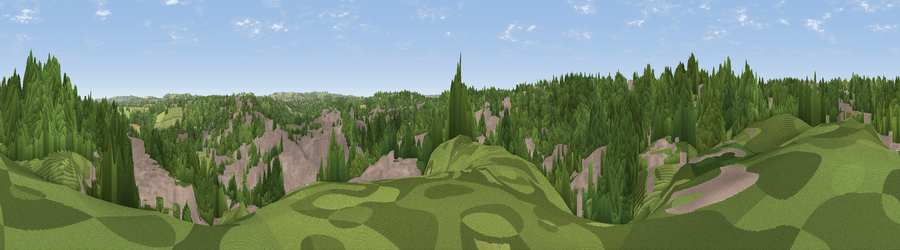

Viewpoint near Durham
#38481 in England · top 83% of its area beats it · near Durham · access?Where it is
The exact computed spot (NZ 26925 42925). Click the marker for map links.
Public access: no public right of way or access land is recorded at this exact spot — it may be on private land. Computed from Natural England's CRoW access layer and OpenStreetMap rights of way — not the legal definitive map. Always verify locally.
The view, rendered

A 360° render of this exact spot computed from the terrain model, tree cover and land cover — summer colours, afternoon light, calibrated against photographs of famous viewpoints. Real trees, hedges and buildings will differ in detail.
The panorama
Grey silhouette: terrain skyline in each direction (720 bearings, Earth curvature and refraction included). Dashed green: skyline with trees (+15 m) and buildings (+8 m) as obstacles. Blue strip: how far the ground is visible on each bearing.
Where the view opens
Wedge length = distance to the farthest visible ground on that bearing (vegetation-aware). Rings at 10, 25 and 50 km.
What fills the view
53% woodland · 37% built-up · 8% grassland · 2% cropland
Angular shares of the visible panorama (visual magnitude), not map area. Landscape diversity 0.44 (0–1 Shannon).
Key numbers
More beautiful places nearby
The staircase of upgrades: each row has a higher view potential than everything closer. Driving times are estimates from straight-line distance, calibrated against real road routing — check an actual route before setting out.
| Place | Direction | Drive | Score |
|---|---|---|---|
| Viewpoint near Shincliffe | SSE · 3 km | ~7 min | 33.4 |
| Viewpoint near High Shincliffe | SSE · 4 km | ~9 min | 44.5 |
| Viewpoint near Sacriston | NNW · 4 km | ~10 min | 66.4 |
| Viewpoint near Edmondsley | NNW · 7 km | ~14 min | 72.3 |
| Viewpoint near Edmondsley | NW · 7 km | ~14 min | 72.6 |
| Viewpoint near Quarrington Hill | SE · 8 km | ~16 min | 73.1 |
| Viewpoint near Houghton-le-Spring | NE · 13 km | ~23 min | 73.7 |
| Viewpoint near Houghton-le-Spring | NE · 13 km | ~24 min | 76.0 |
54.78052, -1.58291 · source: screening · position refined by local search. Computed location — check access rights before visiting.